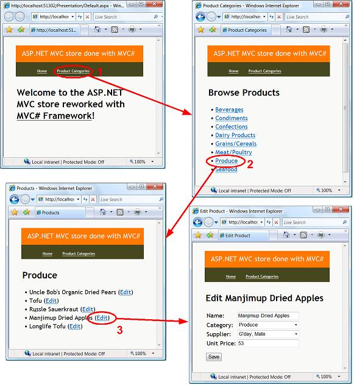
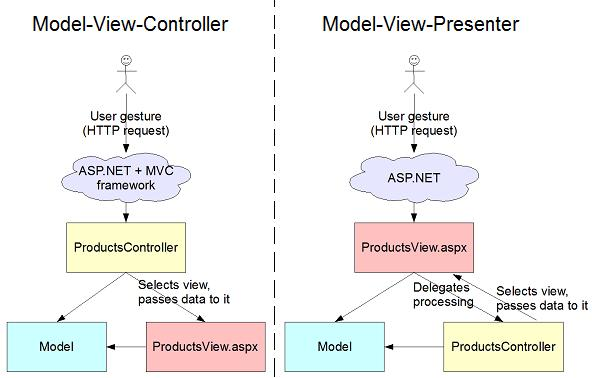
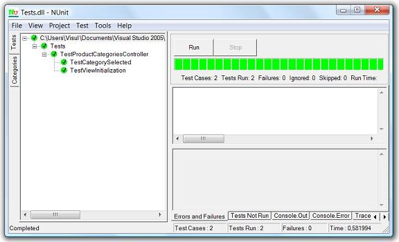
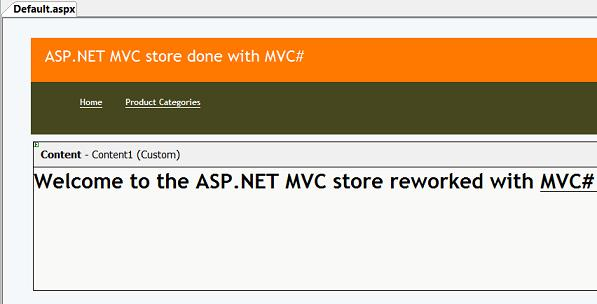
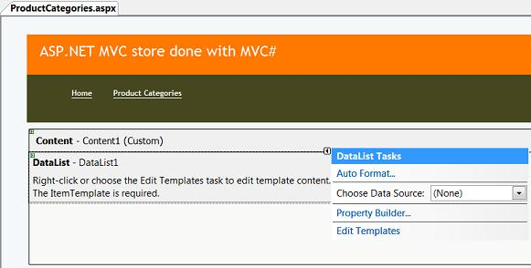
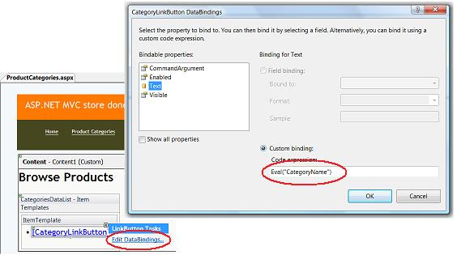
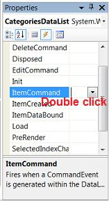

Reworking ASP.NET MVC Store with MVC# Framework
The source code of this example can be found under "Examples\ASP.NET MVC Store\" subfolder
of the MVC# framework root folder. The framework itself can be downloaded from www.MVCSharp.org/download.aspx.
Introduction
A simple store application
The Model is first
Application Logic
Understanding Controllers
Task concept
Product Categories Controller
Products Controller
Edit Product Controller
Presentation
Welcome View
Product Categories View
Products View
Edit Product View
Starting the Application
Summary
Introduction
Not long ago Microsoft introduced their Model-View-Controller framework under ASP.NET
MVC name. It provides a toolset for building well-designed testable 3-tier applications,
which follow the Model-View-Controller pattern. However MVC is not not the only
one architectural solution for constructing 3-tier applications. Another well known
approach is the Model-View-Presenter pattern. MVP pattern appeared about 10 years
after MVC originated. It was designed to be an evolution of MVC and to eliminate
the drawbacks of the latter. And indeed, Model-View-Presenter has a number of advantages
over MVC, which make MVP more favourable choice than MVC for many applications.
In this article we are concerning a new Model-View-Presenter framework under .NET
platform named MVC#. The article is based
on the classic ASP.NET MVC example application by Scott Guthrie (described here:
part 1,
2,
3,
4). But here we are going to reimplement this example with the
use of MVC# Framework, showing the strong points of MVC# (and MVP pattern overall)
over ASP.NET MVC.
A simple store application
The ASP.NET MVC application we are going to rework consists of several views. We
will deal with four of them: "Welcome" view, "Product Categories" view, "Products"
view - to list products within a specific category, and "Edit Product" view to show/edit
details for a chosen product.
If a user clicks on some category in the categories list he should be navigated
to the products view for that category. If he clicks "Edit" against some product
in the products view then the "Edit Product" view should be opened for that product.
Finally, a user should be able to modify the product details (in the "Edit Product"
view) and commit changes by clicking the "Save" button.

The Model is first
Model is the core of every application. It contains definitions for the application
domain concepts, which the rest of the application relies on. That is why applications'
design is often started with constructing the model.
As for implementing the Model tier several approaches are applicable here. A developer
may use the conventional .NET 2.0 datasets, or more object-oriented brand new Linq
+ Entity Framework toolset, or third-party tools such as NHibernate or CapableObjects
ECO. Anyway neither ASP.NET MVC nor MVC# restrict developers in choosing the Model
layer implementation technique.
Our example model will include three domain concepts: Categories, Suppliers and
Products. The relationships between these concepts are quite simple: each product
belongs to some category and some supplier. For maximum capability we will use typed
datasets to implement the Model tier. So this is how our model will look in Visual
Studio dataset designer:

To provide a uniform access to the Model objects we will also apply the Sigleton pattern
to the dataset class. As a result we will easily access domain objects through the
NorthwindDataSet.Instance object.
Application Logic
Application logic is the middle tier of 3-tier systems. It contains the logic of how
the domain model is applied and of what actually happens (application flow in other
words). In MVP/MVC the Application logic tier consists mainly of Controller objects.
Some frameworks (including MVC#) also add Task objects to the Application logic
tier. Next we will talk about controllers and tasks and how they are used in our
example application.
Understanding Controllers
Probably the main difference between MVC and MVP is the difference between what
is called Controller in these patterns. For this reason the Controller in MVP is
even referred to as "Presenter", nevertheless many authors prefer calling it "Controller"
(and so do we). Let us look into the Controllers' peculiarities in the Model-View-Controller
and Model-View-Presenter patterns.
MVC pattern (and, specifically, ASP.NET MVC framework) breaks the standard ASP.NET
web request processing scheme. According to MVC web requests (user gestures) are
processed by the appropriate Controller objects instead of being processed by web
pages. Based on the incoming request URL ASP.NET MVC framework chooses the controller
to process the request. The chosen controller then makes necessary calls to the
Model tier and chooses the view to be shown, also passing the needed data to that
view.

MVP pattern, on the contrary, does not violate the standard ASP.NET web request
processing model. According to MVP web pages do receive web requests (user gestures).
But, instead of processing requests itself, a web page delegates this job to the
associated controller. The controller then, just as in MVC, makes necessary calls
to the model and decides what to show to the user.
The said difference underlies one major drawback of the MVC pattern. The thing is
that MVC requires all user gestures to trigger a request of URL in a specific form
(say, http://domain/[Controller]/[Action]). However, most of ASP.NET controls do
not conform to this requirement. Instead, they generate web page events in response
to user gestures. It means that ASP.NET server controls (especially third-party)
better fit MVP scheme, with user gestures handled by views (web pages), and do not
clearly fit MVC.
Task concept
By task we mean a set of views which a user traverses to fulfil some job. For example
an airline ticket booking task may consist of two views: one for choosing the flight,
the other - for entering personal information. Tasks often correspond to certain
use cases of the system: there may be "Login to the system" and "Process order"
use cases and tasks of the same names. Finally, a task may be associated with a
state machine or a workflow: for example "Process order" task could be implemented
with the "Process order" workflow in WWF.
Although not present in MVC and MVP patterns, task concept proves useful in various
applications. That is why it is implemented in MVC# in addition to the controller
and view concepts.
Real-life systems may consist of dozens of tasks, however our simple application
will include only one task - Main Task. This task will consist of four views mentioned
earlier: "Welcome", "Product Categories", "Products" and "Edit Product". A view-controller
is referred to as interaction point. Thus, we need to declare a task with four interaction
points. In MVC# interaction points are defined by string constant fields equipped
with [IPoint] attribute:
public class MainTask : TaskBase
{
[IPoint(typeof(ControllerBase), true)]
public const string Welcome = "Welcome";
[IPoint(typeof(ProductCategoriesController), true, Products)]
public const string ProductCategories = "Product Categories";
[IPoint(typeof(ProductsController), EditProduct)]
public const string Products = "Products";
[IPoint(typeof(EditProductController))]
public const string EditProduct = "Edit Product";
}
Each interaction point declaration includes the name of the view (value of the constant),
the type of the controller and navigation information.
Navigation information specifies
the possible order in which views can be activated. For instance, true parameter
value in the [IPoint(typeof(...), true)] attribute definition declares the view as a common navigation target. It means that this view
can be activated at any time, regardless of the current active view. In our example
the "Welcome" and "Product Categories" views are common targets. Next, [IPoint]
attribute applied to, say, "View 1" specifies views which can be navigated to from "View 1". In our example [IPoint(typeof(...), EditProduct)]
declares that "Edit Product" view can be activated (or, in other words, navigated
to) if "Products" view is active.
Tasks often contain global information used among several views/controllers. In
our example a product category is chosen inside the "Product Categories" view and
is browsed in the "Products" view. To be accessible from both these views the selected
category will be stored in a new MainTask.SelectedCategory property. In the same
way we introduce a MainTask.SelectedProduct property:
public class MainTask : TaskBase
...
private NorthwindDataSet.CategoriesRow selectedCategory =
NorthwindDataSet.Instance.Categories[0];
private NorthwindDataSet.ProductsRow selectedProduct =
NorthwindDataSet.Instance.Products[0];
public event EventHandler SelectedCategoryChanged;
public event EventHandler SelectedProductChanged;
public NorthwindDataSet.CategoriesRow SelectedCategory
{
get { return selectedCategory; }
set
{
selectedCategory = value;
if (SelectedCategoryChanged != null)
SelectedCategoryChanged(this, EventArgs.Empty);
}
}
public NorthwindDataSet.ProductsRow SelectedProduct
{
get { return selectedProduct; }
set
{
selectedProduct = value;
if (SelectedProductChanged != null)
SelectedProductChanged(this, EventArgs.Empty);
}
}
The last thing left to do with the task - is to define actions performed on task
start. This is done by implementing the ITask.OnStart(...) method:
public class MainTask : TaskBase
...
public override void OnStart(object param)
{
Navigator.NavigateDirectly(Welcome);
}
As seen above, we are simply activating the "Welcome" view when the task is started.
NavigateDirectly method is used instead of Navigate to switch views ignoring any navigation routes.
Product Categories Controller
As we already know, processing of every user gesture should be delegated to the
corresponding controller method. If no user gestures are applicable, a simple operationless
ControllerBase may be used. This is the case with the "Welcome" view in our example.
Inside the "Product Categories" view a user can choose a specific category. The
processing of this gesture should be delegated to the ProductCategoriesController.CategorySelected(...)
method. We could immediately proceed to writing the body of this method, but instead
let us firstly write the test case for it, in full accordance with Test Driven Development
(TDD) principles:
[TestFixture]
public class TestProductCategoriesController
...
[Test]
public void TestCategorySelected()
{
NorthwindDataSet.CategoriesRow cat =
NorthwindDataSet.Instance.Categories.NewCategoriesRow();
controller.CategorySelected(cat);
Assert.AreSame(cat, controller.Task.SelectedCategory);
Assert.AreEqual(MainTask.Products, controller.Task.CurrViewName);
}
The first NUnit assertion checks that the controller stores the selected category
in the task's SelectedCategory property. The second assertion ensures that the controller
performs navigation to the "Products" view (by checking the task's CurrViewName
property).
Of course, some test setup is needed to link the participating objects together.
In the setup we are using the stub navigator implementation - it does not perform
navigation, only changes the task state -
which is ideal for test cases:
[TestFixture]
public class TestProductCategoriesController
...
[SetUp]
public void TestSetup()
{
controller = new ProductCategoriesController();
controller.Task = new MainTask();
controller.Task.Navigator = new StubNavigator();
controller.Task.Navigator.Task = controller.Task;
}
Now that the test for the CategorySelected method is ready let us write
its body:
public class ProductCategoriesController : ControllerBase<MainTask,
IProductCategoriesView>
...
public void CategorySelected(NorthwindDataSet.CategoriesRow selectedCat)
{
Task.SelectedCategory = selectedCat;
Task.Navigator.Navigate(MainTask.Products);
}
Note that controllers in MVC# should implement the IController interface. But instead
of implementing it manually it is recommended to inherit its base generic implementation
ControllerBase<TTask, TView> (specifying the expected task and view types
as generic parameters).
Another thing that a controller should do is the view initialization. View initialization
is usually done when a controller is linked to its view, i.e. in the IController.View
setter method. In our example
the product categories view should be initialized to list all possible categories. Again, we will start with the test case which will check the correctness
of initialization:
[TestFixture]
public class TestProductCategoriesController
...
[Test]
public void TestViewInitialization()
{
controller.View = new StubProductCategoriesView();
Assert.AreSame((NorthwindDataSet.Instance.Categories as IListSource)
.GetList(), controller.View.CategoriesList);
}
StubProductCategoriesView is a simple test-aimed IProductCategoriesView implementation
with a backing field. Code to satisfy the above test case will look as follows:
public class ProductCategoriesController : ControllerBase<MainTask,
IProductCategoriesView>
...
public override IProductCategoriesView View
{
get { return base.View; }
set
{
base.View = value;
View.CategoriesList = (NorthwindDataSet.Instance.Categories
as IListSource).GetList();
}
}
Running the tests indicates our success:

Products Controller
In the "Products" view a user may click "Edit" against some product. Processing
of this gesture should be delegated to the controller's EditProduct(...) method.
This method, in its turn, should store the product chosen in the task's SelectedProduct
property, and then navigate to the "Edit Product" view. For brevity we will omit
the test case listing here, and will list only the EditProduct method itself:
public class ProductsController : ControllerBase<MainTask, IProductsView>
...
public void EditProduct(NorthwindDataSet.ProductsRow product)
{
Task.SelectedProduct = product;
Task.Navigator.Navigate(MainTask.EditProduct);
}
View initialization code should setup the view to show the contents of the current
category:
public class ProductsController : ControllerBase<MainTask, IProductsView>
...
public override IProductsView View
{
get { return base.View; }
set
{
base.View = value;
View.Category = Task.SelectedCategory;
}
}
The Products Controller should also track the change of the selected category and,
if a user selects another category, it should accordingly change the category browsed
in the products view. To track the change of the current category we will
subscribe to the Task's SelectedCategoryChanged event inside the ProductsController.Task
setter method:
public class ProductsController : ControllerBase<MainTask, IProductsView>
...
public override MainTask Task
{
get { return base.Task; }
set
{
base.Task = value;
Task.SelectedCategoryChanged += SelectedCategoryChanged;
}
}
private void SelectedCategoryChanged(object sender, EventArgs e)
{
View.Category = Task.SelectedCategory;
}
Edit Product Controller
The only operation applicable in the "Edit Product" view is committing the changes done
to the edited product. The corresponding controller method will be EditProductController.Commit():
public class EditProductController : ControllerBase<MainTask, IEditProductView>
{
public void Commit()
{
NorthwindDataSet.ProductsRow product = Task.SelectedProduct;
product.ProductName = View.ProductName;
product.CategoriesRow = View.Category;
product.SuppliersRow = View.Supplier;
product.UnitPrice = View.UnitPrice;
}
As always, the controller should initialize the view:
public class EditProductController : ControllerBase<MainTask, IEditProductView>
...
public override IEditProductView View
{
get { return base.View; }
set
{
base.View = value;
InitViewData();
}
}
private void InitViewData()
{
View.ProductName = Task.SelectedProduct.ProductName;
View.Category = Task.SelectedProduct.CategoriesRow;
View.Supplier = Task.SelectedProduct.SuppliersRow;
View.UnitPrice = Task.SelectedProduct.UnitPrice;
}
And the controller should track the change of the selected customer, and accordingly
fill the view:
public class EditProductController : ControllerBase<MainTask, IEditProductView>
...
public override MainTask Task
{
get { return base.Task; }
set
{
base.Task = value;
Task.SelectedProductChanged += SelectedProductChanged;
}
}
private void SelectedProductChanged(object sender, EventArgs e)
{
InitViewData();
}
Presentation
Welcome View
All our four views will use the same master page, containing a header and a menu
stripe. Welcome view will be the default web page (Default.aspx) and will contain
nothing but the welcome phrase:

Views in MVC# should implement the IView interface. For this reason all our views
inherit a base IView implementation - WebFormView (or
its generic version WebFormView<T> with a controller type specified as generic
parameter).
Product Categories View
As we mentioned earlier most of ASP.NET controls with their server-side events better
fit the Model-View-Presenter paradigm, rather than MVC. Therefore building user
interfaces in MVC# applications is generally easier than with ASP.NET MVC framework.
Like we did to the Welcome view, we make the Product Categories view use the same
master page and inherit from WebFormView<T>. Then we place a DataList
control on the form:

Next, let us edit an item template of the DataList control. Inside this template
we will put a link button named "CategoryLinkButton" and then will configure data
bindings for it by selecting "Edit DataBindings..." from the context menu. Data
Bindings configuration dialog should be opened:

For each link's text to be the name of the corresponding category we set the Text
property binding to Eval("CategoryName").
As we already know, actual categories list is passed by controller through the IProductCategories
interface. Hence this interface should be implemented by the product categories
view:
public partial class ProductCategories :
WebFormView<ProductCategoriesController>, IProductCategoriesView
...
public IList CategoriesList
{
get { return CategoriesDataList.DataSource as IList; }
set
{
CategoriesDataList.DataSource = value;
DataBind();
}
}
Finally, we should make the view handle category selection. As soon as a category link
is clicked the processing should be delegated to the controller's CategorySelected(...)
method (which we have already implemented). For this let us add a handler for the
ItemCommand event of the CategoriesDataList control:

The handler, as we said, should pass the selected category to the controller's CategorySelected(...)
method:
public partial class ProductCategories :
WebFormView<ProductCategoriesController>, IProductCategoriesView
...
protected void CategoriesDataList_ItemCommand(object source,
DataListCommandEventArgs e)
{
DataRowView rv = CategoriesList[e.Item.ItemIndex] as DataRowView;
Controller.CategorySelected(rv.Row as NorthwindDataSet.CategoriesRow);
}
Products View
The Products view is similar in many aspects to the Product Categories view: it
contains a list of objects (implemented with DataList control) with links to choose
any one of them. Due to this similarity we will omit the description of any details.
Below is how the IProductsView interface implemented:
public partial class Products : WebFormView<ProductsController>, IProductsView
...
private NorthwindDataSet.CategoriesRow category;
public NorthwindDataSet.CategoriesRow Category
{
get { return category; }
set
{
category = value;
ProductsDataList.DataSource = Category.GetProductsRows();
CategoryNameLabel.Text = Category.CategoryName;
DataBind();
}
}
Processing the "Edit" links click is done in the same way as we did in the "Product
Categories" view - by handling the DataList.ItemCommand event:
public partial class Products : WebFormView<ProductsController>, IProductsView
...
protected void ProductsDataList_ItemCommand(object source,
DataListCommandEventArgs e)
{
object itm = (ProductsDataList.DataSource as IList)[e.Item.ItemIndex];
Controller.EditProduct(itm as NorthwindDataSet.ProductsRow);
}
Edit Product View
And again, steps to build the view are the same here: inherit the view from WebFormView<T>
specifying the controller type, then design the view surface, then make it implement
the proper view interface (IEditProductView), and finally make it handle user gestures
by delegating the work to the controller. Since the steps are analogous
we will skip them and proceed to the next article part. If desired, a reader may
see how the view is implemented in the example source code.
Starting the Application
Starting an MVC# application means just starting one of its tasks. In our case we
will start the Main Task. The common place in ASP.NET programs for the initial task
staring code is the session start handler (in Global.asax file):
<!---------------------- Global.asax file -------------------->
<script runat="server">
...
public void Session_Start(object sender, EventArgs e)
{
TasksManager tm = new TasksManager(WebformsViewsManager.
GetDefaultConfig());
tm.StartTask(typeof(MainTask));
}
As seen above, we are using a TasksManager instance to start the task. However each
tasks manager requires some configuration before using it. Above we are passing
a standard configuration object intended for Web applications to the tasks manager
constructor.
Last thing left to do - is to define mapping between views and corresponding web
pages. For this we should add the following code to the Global.asax <script>
block:
<!---------------------- Global.asax file -------------------->
<script runat="server">
...
[WebformsView(typeof(MainTask), MainTask.Welcome, "Default.aspx")]
[WebformsView(typeof(MainTask), MainTask.ProductCategories,
"ProductCategories.aspx")]
[WebformsView(typeof(MainTask), MainTask.Products, "Products.aspx")]
[WebformsView(typeof(MainTask), MainTask.EditProduct, "EditProduct.aspx")]
class ViewDescriptions { }
That is all, we have successfully finished our example application, and it is ready
to run!
Summary
We have learned how to create 3-tier Model-View-Presenter applications with the
help of MVC# framework.
As an example we have chosen the ASP.NET MVC sample application to demonstrate all
advantages of MVC# over ASP.NET MVC and other MVC frameworks. Applications done with
MVC# are no less structured and testable and better suit modern UI controls than
those built with existing MVC frameworks. In addition we should say that MVC# has
support for other presentation platforms (Winforms, in plans: Silverlight and WPF)
allowing to run the same application under different GUIs.
The source code of this example can be found under "Examples\ASP.NET MVC Store\"
subfolder of the MVC# framework root folder. The framework itself can be downloaded from www.MVCSharp.org/download.aspx.